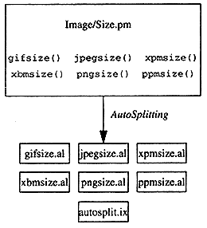

I first took interest in the AutoLoader when converting a lot of legacy code from Perl 4 to 5. One of the libraries that particularly frustrated me was a front end to some RCS utilities. The overhead was too high; in a library of 40-50 subroutines, I rarely needed more than two-thirds in a given execution, and sometimes just a few. Not only did I want to avoid the penalty of loading and parsing the whole library, I wanted to keep the unneeded routines from ever being loaded in the first place.
One of the ways in which use differs from require is that it loads (that is, reads and compiles) the module at compile time, before Perl begins running the script. In Perl 4, which doesn't have use, I deferred loading the RCS library as long as possible by performing other tasks first, such as validating command-line usage, and so on. But as I upgraded, I realized that to take advantage of Perl 5, I needed to turn libraries into modules, and design my modules around the tools that Perl provides. As a result, I turned to the AutoLoader and AutoSplit libraries.
I'll use a smaller example for this article, a module I maintain called Image::Size (available on the CPAN). It's a general-purpose utility to read height and width data from image files, and even enables CGI scripts to generate HTML height and width attributes for image tags. Image::Size supports six image formats: GIF, JPEG, XBM, XPM, PPM, and PNG. However, few of these are recognized by web browsers, and the odds of having more than two or three in a given document are not high. This was a logical use of the AutoLoader and AutoSplit libraries, and the library was written from the start with the intent of using them.
To make your module autoload, first add these two lines to the beginning:
use AutoLoader; *AUTOLOAD = \&AutoLoader::AUTOLOAD;
The use statement includes the AutoLoader module, and the second line aliases the AUTOLOAD() subroutine from that package into your module's package. As its name suggests, AUTOLOAD() handles a lot of the dirty work of autoloading for you. Whenever Perl can't find a subroutine, it looks to see if there's an AUTOLOAD() subroutine, and uses that instead.
The next step is to decide which routines should and should not be autoloaded. Code that initializes things, such as the new() method of a class, will almost certainly be called every time the module is loaded, so there's nothing to be gained from autoloading - in fact, it even slows down the first call slightly. Cluster the subroutines that needn't be autoloaded at the top of the module. In Image::Size, there are three such subroutines:
imgsize()
html_imgsize()
attr_imgsize()
imgsize() will always be called at least once, and the other two subroutines are just frequently invoked wrappers around it. In addition, Image::Size contains one subroutine for each of the supported image formats:
gifsize()
jpegsize()
xbmsize()
xpmsize()
ppmsize()
pngsize()
I didn't want Image::Size to load and parse any of these subroutines unless the user had an image in the corresponding format. So the next step was to place the special Perl token _ _END_ _ before all of those subroutines:(* Perhaps you are wondering why _ _END_ _ and not _ _DATA_ _? After all, there can only be one _ _END_ _ per file, but a file can contain several packages, each with its own _ _DATA_ _. First, using _ _DATA_ _ would deny the module the ability to store static data. Second, the AutoSplit module can’t handle multiple packages within the same file, so there wouldn’t be a benefit anyway. )
sub imgsize { ... }
sub html_imgsize { ... }
sub attr_imgsize { ... }
_ _END_ _
sub gifsize { ... }
sub jpegsize { ... }
...
Perl stops reading whenever it encounters an _ _END_ _. However, a program called AutoSplit (described later) knows to look for your module definitions there. Here's what Image::Size looks like after AutoSplitting:

AutoSplit "splits out " the subroutines after _ _END_ _, each into its own .al file, as the diagram shows. Though the subroutines still exist in the original Image/Size.pm, Perl will ignore them in favor of the .al files. We'll come back to autosplit.ix shortly.
So what happens to the subroutines following _ _END_ _? And when exactly will they be loaded into memory and made accessible to your program?
The AUTOLOAD() subroutine provided by the AutoLoader module searches all the directories in @INC (the special list of directories that Perl uses to locate modules and library files), looking for subdirectories called auto. On the first call to gifsize(), this subroutine tries to find an auto/Image/Size directory somewhere in @INC, and then tries to find a file named gifsize.al in that directory. If found, it's read in and compiled. Presuming the compilation succeeds, Perl uses a special form of the goto statement to switch execution to the new routine without altering the run-time stack. (This in itself is important - if you are running under the debugger, or if you use the Carp module to handle warnings and error reports, your subroutine call stack can be very important for tracing execution of your program, but after autoloading, there will be no trace of the AUTOLOAD() in your stack.)
autosplit.ix. The index created by AutoSplit, autosplit.ix, declares the package namespace (Image::Size, in our example) and predeclares the subroutines to be loaded on demand (the six subroutines following the _ _END_ _).
So if you install Image::Size and then type something like this from your prompt:
% perl -e 'use Image::Size; print imgsize("TPJ.gif")'
the imgsize() subroutine in Image::Size calls gifsize(). That subroutine isn't immediately available, so the AutoLoader loads it from lib/site_perl/auto/Image/Size/gifsize.al.
For a more hands-on example, visit your Perl's lib directory and find auto/POSIX. This package is too large to use as an example here, but that's what makes it a prime candidate for autoloading. It's a hundred functions strong, but usually only a few will be desired at any one time.
There's one step I haven't told you about yet: how do you create the *.al and autosplit.ix files that AUTOLOAD() looks for? You know that's done by the AutoSplitter, but how is that invoked?
You could invoke it manually:
% perl -e 'use AutoSplit; autosplit("YourModule.pm",
"YourLibAutoDirectory", 0, 1, 1);
which does five things:
Or, if you're using MakeMaker (the Perl utility that lets module users create makefiles for their particular platform) then the Makefile generated by MakeMaker's Makefile.PL will contain rules to invoke AutoSplit automatically. However, since MakeMaker isn't always available, you can embed the rules in your makefile yourself:
PERL = /usr/local/bin/perl
PERL_LIB = /usr/local/lib/perl5
PERL_ARCHLIB = /usr/local/lib/perl5/PA-RISC1.1/5.003
AUTOSPLITFILE = ${PERL} -MAutoSplit -I$(PERL_ARCHLIB) \
-I$(PERL_LIB) -e 'autosplit($$ARGV[0], $$ARGV[1], 0, 1, 1)'
That's for my HP 712 running HP/UX 9.05. Your paths and architecture will certainly be different; use perl -V to determine your settings:
% perl -V:perlpath % perl -V:installsitelib % perl -V:installarchlib
Inside your makefile, you'll need to add an "action line " such as this:
$(AUTOSPLITFILE) Module.pm /my/perllib/auto
causing Module.pm to be split into the directory /my/perllib/auto. That's all there is to it!
The AutoLoader/AutoSplit combination was designed to work only on modules, but the notion of deferring work is useful for scripts as well. I often combine multiple CGI scripts into a single self-referencing script that needs only one or two subroutines, depending on the CGI parameters. Why waste cycles parsing code that won't be executed?
Enter a cousin of AutoLoader called SelfLoader. The SelfLoader module is similar to AutoLoader, pulling in and compiling routines on demand. But unlike AutoLoader, it's meant to work within an executing script, and it uses the _ _DATA_ _ token rather than _ _END_ _.
Modern operating systems support the notion of dynamic linking: loading chunks of object code (usually compiled from C) only when needed. If you want to do this from Perl, use Perl's DynaLoader. However, it doesn't provide the Perl-to-C bridge code. For that, you need to create stub functions in a language called XS; see Otmar Lendl's article on Randomness).
At this point, you now know everything you need to use autoloading in your modules. Take that two thousand line module, slice it up, improve your application's startup time, and show your boss that you deserve a raise. If Image::Size or POSIX don't slake your thirst, there are many other CPAN-retrievable packages that are good examples of autoloading: Tk, MailTools, and LWP, to name a few.
There are a few other autoloading tidbits I'd like to share. First, a caveat: autoloading does exact a load and compile penalty for each subroutine loaded on demand. Second, each autoloaded subroutine results in an extra file containing code the same code that already exists in the module. Third, autoloading isn't the only way to dynamically load subroutines.
Lincoln Stein's CGI.pm module uses a self-contained autoload scheme that is efficient, ingenious, and obfuscated all at once, making use of AUTOLOAD() but not the AutoLoader. Remember that when Perl encounters a call to an undefined subroutine, it tries to substitute AUTOLOAD(), if such a subroutine exists in the current package. That subroutine can do anything you want. When AUTOLOAD() is invoked, a variable called $AUTOLOAD will have been set to the full package-qualified name of the desired subroutine (for example, Image::Size::gifsize()). The special array @_ contains the arguments intended for the subroutine. AUTOLOAD() isn't expected to return a result (except on error), but rather transparently pass execution to the newly-loaded code.
Several packages (such as POSIX and DB_File in the core Perl distribution) use their own AUTOLOAD() function, that itself calls the one from AutoLoader.pm. This allows local handling of such things as package constants or pseudo-routines, while still letting AutoLoader handle the more detailed loading tasks.
Perl 5's autoloading mechanism is yet another reason to upgrade from Perl 4. Whether it is Perl code being loaded or compiled code being dynamically loaded, on-demand inclusion keeps your code lean by only parsing what's necessary. Put it to work on your larger modules, and you'll appreciate the results.
_ _END_ _